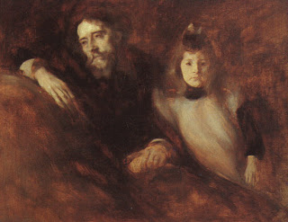

Kiddushin 79 - Agent and Father Find Husband for Daughter
If a father of a minor girl commissioned an agent to find a husband for her and accept the betrothal money, and the father himself then went and betrothed her to someone, then if the father's betrothal occurred first, then it is valid, and if the agent's betrothal occurred first, then it is the one that is valid.
If it is unknown whose betrothal occurred first, then she cannot marry another man unless both give her a Get. And if they want, one of them can give her a Get and the other one can marry her.